本轮 16 组页面
01 · 首页 · 390dp
分组标题调整为 18sp。
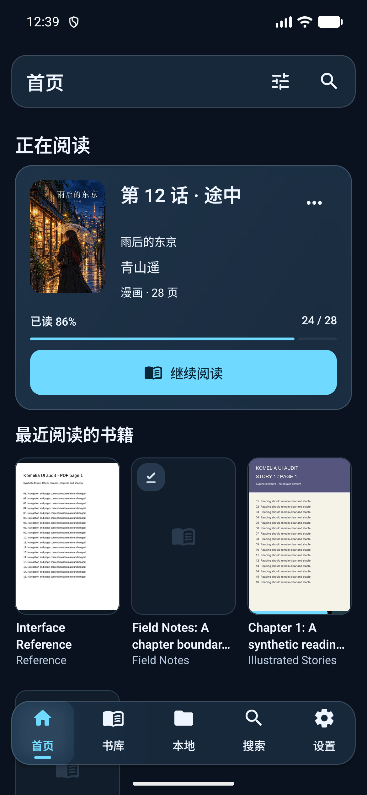
02 · 书库 · 390dp
三列封面 88 × 132，单行和双行标题顶对齐。
03 · 丛书卷册 · 390dp
书籍和合集共用工具栏，不再增加独立切换层。
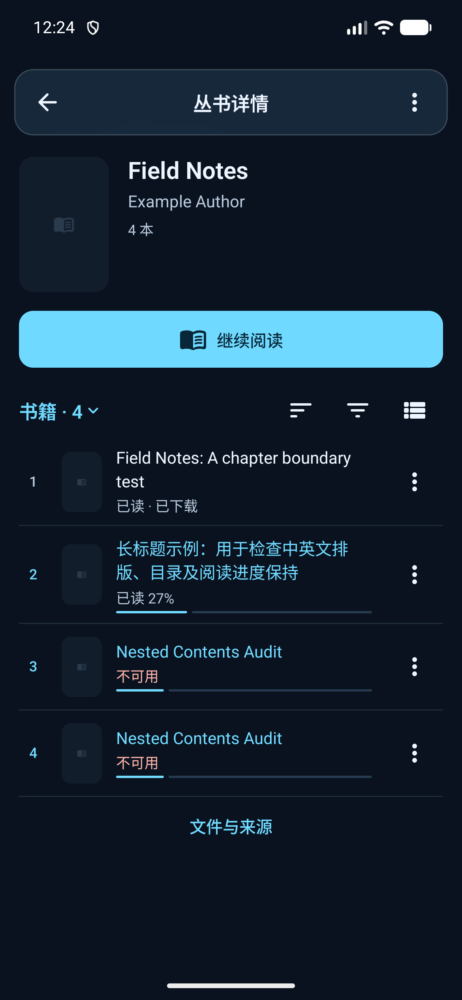
04 · 文字书详情 · 390dp
完整长标题、目录和下载保留，阅读按钮居中。
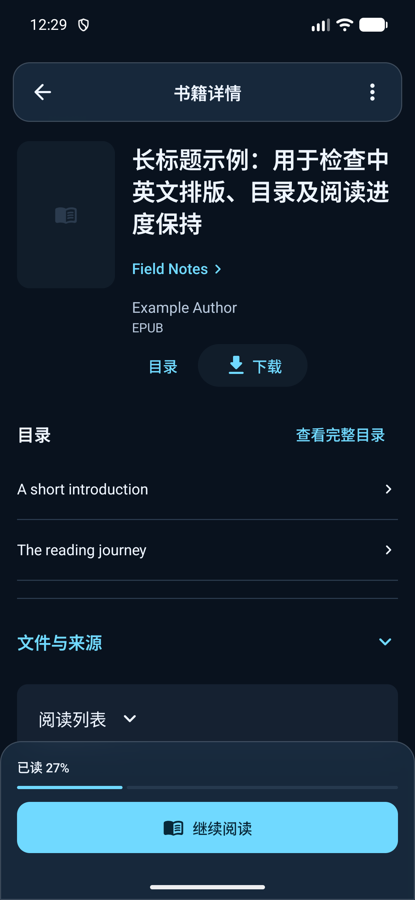
05 · 漫画详情 · 390dp
标题居中，简介内部间距 8，阅读条下留白 20。
06 · 本地与下载 · 390dp
本地目录采用图标、左对齐标题和右箭头行。
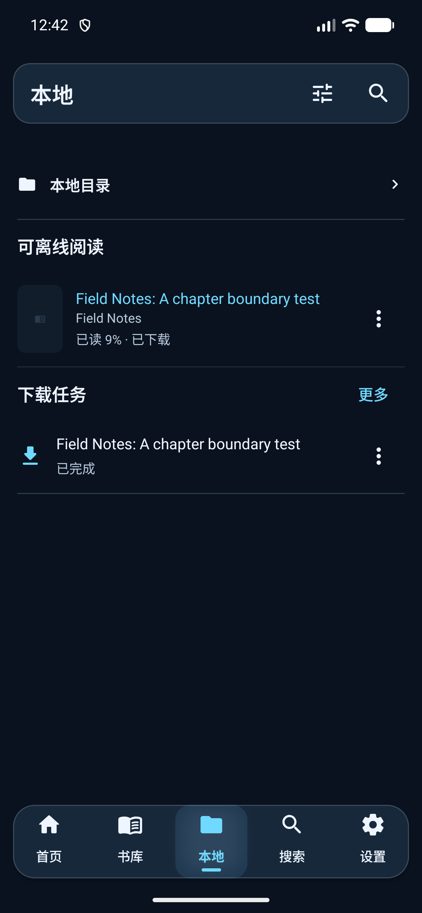
07 · 搜索查询 · 411.43dp
英文输入 Field 后显示 Field Notes，清空恢复原结果。
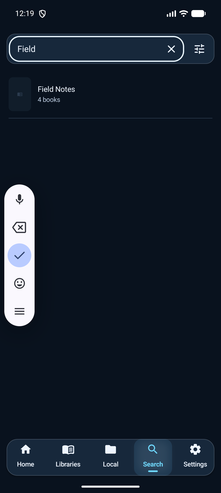
08 · 设置首页 · 390dp
共享顶栏外边距调整为 12，既有分组保留。
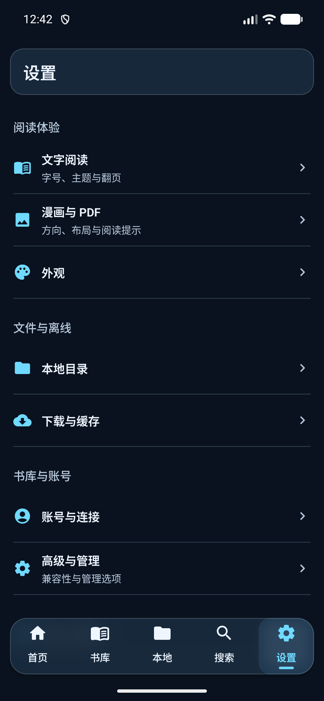
09 · 筛选与显示 · 390dp
范围和类型同排，常用条件前置，完成固定可达。
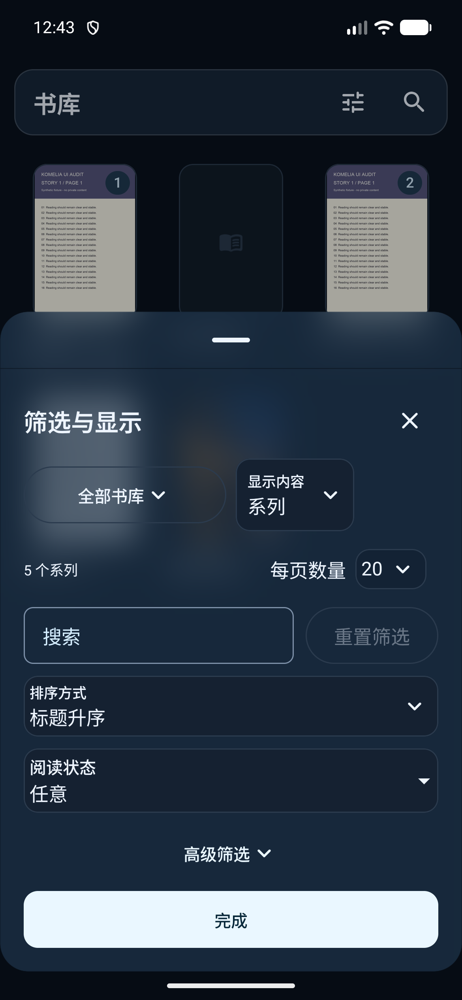
10 · EPUB 目录 · 390dp
目录及关闭入口保持，原生手柄区域保留。
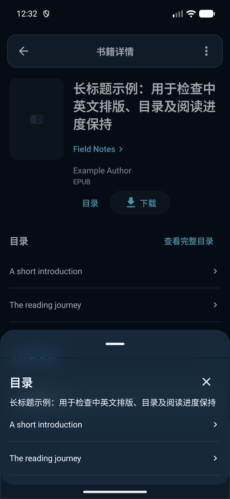
11 · 文字阅读设置 · 390dp
字体同排，六个主题按三列排列，新增主题单独保留。
12 · 漫画与 PDF 设置 · 390dp
标题与正文左边距 20，三项模式均分整行。
13 · 文字详情浅色 · 390dp
复核浅色下长标题、次操作与阅读条。
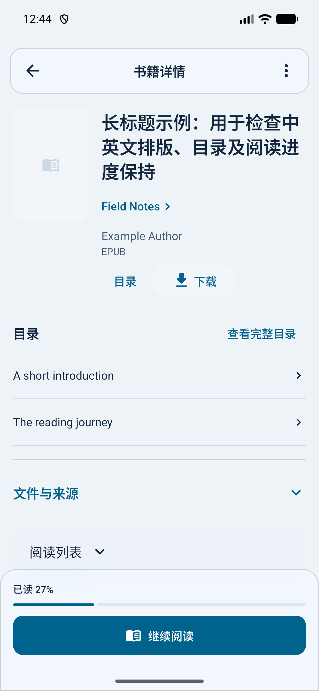
14 · 丛书浅色 · 390dp
复核浅色下工具栏、卷册和阅读状态。
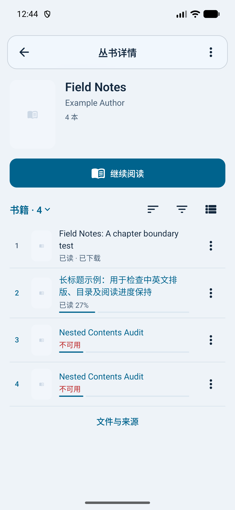
15 · 834dp 平板 · 834dp
导航占宽 80；封面 112 × 168；浮条左右 24。
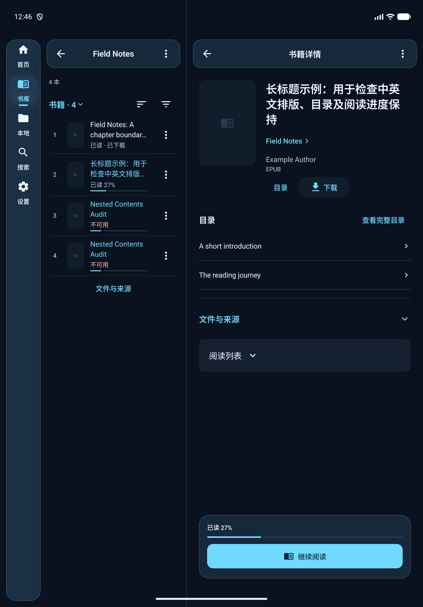
16 · 1440dp 宽屏 · 1440dp
导航占宽 180；封面 132 × 198；浮条左右 48。